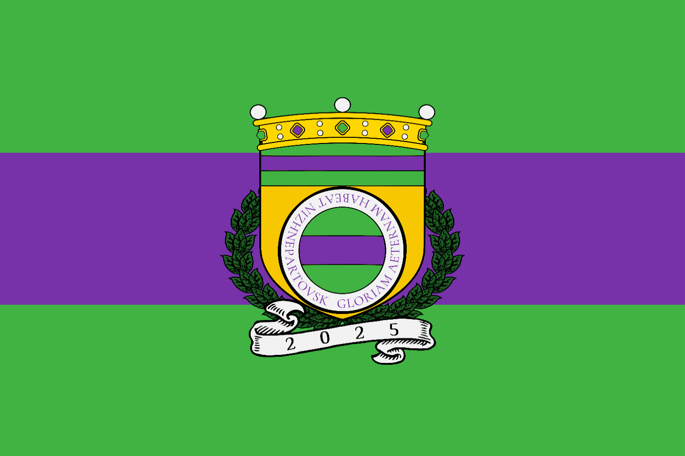
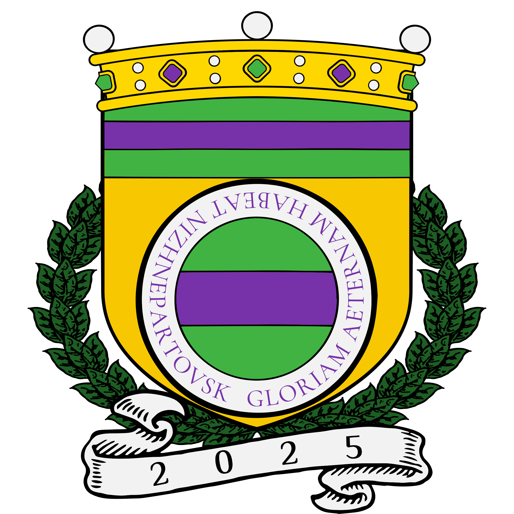

Nizhnepartovsk has 3 national symbols: the flag, coat of arms and the anthem. They are listed below.

The flag features 3 stripes (green, purple and green) and the coat of arms. The green on the flag symbolizes the peace and prosperity whereas purple is a symbol of royalty and nobility. The description of the coat of arms is shown below.

The coat of arms features three primary colors: gold, green and purple. Green, similarly to the flag, symbolizes the peace and prosperity along with purple being a sign of royalty and nobility while the gold is the richness. The golden crown on top is the wealth of Nizhnepartovsk with purple and green gems of peace and prosperity. The wreath has the same meaning as the green color. "GLORIAM AETERNAM HABEAT NIZHNEPARTOVSK" translates to "ETERNAL GLORY TO NIZHNEPARTOVSK" from Latin. The year 2025 on the white stripe is the year when Nizhnepartovsk was founded.
Nizhnepartovsk uses Russian version of Ode to Joy by Ludwig van Beethoven because of the idea of the peaceful union of people that the lyrics are about.